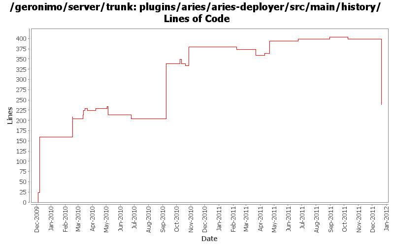

[root]/plugins/aries/aries-deployer/src/main/history

| Author | Changes | Lines of Code | Lines per Change |
|---|---|---|---|
| Totals | 32 (100.0%) | 540 (100.0%) | 16.8 |
| gawor | 12 (37.5%) | 237 (43.9%) | 19.7 |
| rickmcguire | 10 (31.3%) | 213 (39.4%) | 21.3 |
| djencks | 5 (15.6%) | 64 (11.9%) | 12.8 |
| xuhaihong | 1 (3.1%) | 10 (1.9%) | 10.0 |
| genspring | 1 (3.1%) | 6 (1.1%) | 6.0 |
| violalu | 1 (3.1%) | 5 (0.9%) | 5.0 |
| rwonly | 2 (6.3%) | 5 (0.9%) | 2.5 |
GERONIMO-6240 Modify configs so that they use features as the bootstrap, and fix a few compile and test errors. Servers build but do not fully start
5 lines of code changed in 1 file:
update dependencies.xml files
0 lines of code changed in 1 file:
Update dependencies.xml file, including bval and commons-jexl changes
10 lines of code changed in 1 file:
changed dependencies.xml after a clean build.
6 lines of code changed in 1 file:
GERONIMO-5926: Shell command for resolving Aries applications
30 lines of code changed in 1 file:
GERONIMO-5885 Upgrade karaf from 2.1.2 to 2.2.1-SNAPSHOT
5 lines of code changed in 1 file:
refact geronimo aries plugin structure
5 lines of code changed in 1 file:
GERONIMO-5801 jaxb-impl bundle should export com.sun.* packages with a version
Switching to snapshot version.
0 lines of code changed in 1 file:
GERONIMO-5702: Update for Karaf 2.1.2. Based on patch from Viola Lu
5 lines of code changed in 1 file:
use the new servicemix javassist bundle
5 lines of code changed in 1 file:
fix build error caused by javassist version problem
5 lines of code changed in 1 file:
switch to released version of activemq
45 lines of code changed in 1 file:
update to the latest jaspi version
0 lines of code changed in 1 file:
dependency cleanup
0 lines of code changed in 1 file:
GERONIMO-5230 Add Bean Validation Support to the connector 1.6 implementation.
Changes to Geronimo base.
10 lines of code changed in 1 file:
restore default environment to the BValNamingBuilder, remove extraneous setAttribute() for PersistenceUnitGBean
137 lines of code changed in 1 file:
switch to obr resolver from apache aries
5 lines of code changed in 1 file:
GERONIMO-5190 use openejb-jee jaxb tree for spec dds
5 lines of code changed in 1 file:
GERONIMO-5285: Update some of the aries application code so that it works better with the standard deploy/undeploy/start/stop operations
0 lines of code changed in 1 file:
remove snapshot version of jdt-core
5 lines of code changed in 1 file:
ejb spec needs jaxrpc and jaxrpc needs servlet
5 lines of code changed in 1 file:
GERONIMO-5242 Make spec version naming conventions consistent.
Updating trunk to new spec numbering rules.
1 lines of code changed in 1 file:
GERONIMO-5201 Repace service versions of spec bundles with Geronimo latest versions.
5 lines of code changed in 1 file:
My build shows xbean-finder as a new dependency... maybe this will fix the auto-build
0 lines of code changed in 1 file:
GERONIMO-4971: Initial OBR integration for Aries Applications. Some of the OBR resolver code is based on the resolver in Apache Aries
5 lines of code changed in 1 file:
forgot to commit
10 lines of code changed in 1 file:
GERONIMO-4971: Much improved Aries application support along with Karaf shell commands for installing/uninstalling/starting/stopping/listing applications
15 lines of code changed in 1 file:
GERONIMO-4971 fix (I hope) dependency changes from the previous mistaken commit
0 lines of code changed in 1 file:
GERONIMO-4971 include obr repository.xml in every plugin, and install it into an obr instance when the plugin is installed. Also update the aries plugin and build it. The framework geronimo-obr module is written by Jarek Gawor with minor changes
54 lines of code changed in 1 file:
update artifactId for aries module
1 lines of code changed in 1 file:
GERONIMO-4971: install application bundles into the repository
137 lines of code changed in 1 file:
GERONIMO-4971: basic structure for deployer for aries applications. The deployer communicates with Aries' ApplicationMetadataManager service to parse the application manifest
24 lines of code changed in 1 file: